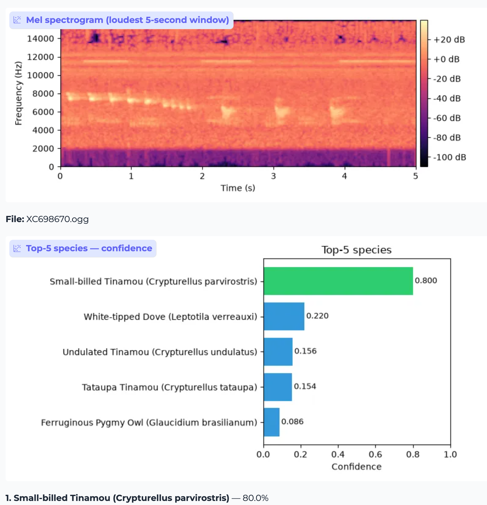

Project Overview
This system was designed to address the challenge of identifying wildlife species in the Pantanal wetlands of Brazil. Given the density of the environment and the overlapping nature of wildlife calls, the task requires more than simple classification; it requires fine-grained Sound Event Detection (SED) capable of isolating individual vocalizations from complex, multi-species acoustic soundscapes.
Read the full article here

Source Dataset Summary

The dataset is sourced from the Kaggle BirdCLEF 2026 competition, focused on offline acoustic wildlife detection.
It consists of two main data pools thats used for training and validation and taxonomic classes:
- Short, focused training audio clips
- long-form soundscapes
- Taxonomic Classes: The dataset monitors 234 distinct taxonomic wildlife classes representing a total of 161 unique genera.
- The labeled soundscapes (LSS) are collected across several distinct geographical monitoring locations. The pipeline processes a massive subset of 10,658 total LSS segments across these sites during pseudo-labeling, balancing localized acoustic profiles.
Architectural Evolution
The solution progressed through distinct phases of maturity, moving from a brittle baseline to a robust ensemble pipeline. The front-end stayed fixed throughout — 128-mel spectrograms, 5 s windows @ 32 kHz, per-sample z-score — feeding an EfficientNet backbone with fp32-guarded GEM frequency pooling and an attention/SED head. The target metric is macro-averaged ROC-AUC over 234 species, scored CPU-only within a 90-minute budget.
- Phase 1 (The Baseline) using EfficientNet-B0:
The approach used a Three-Pool-Head (a learned mean/max/attention blend), a frame-max auxiliary loss to sharpen localisation of brief calls, an fp32 guard on GEM/head to kill the AMP overflow, and BatchNorm recalibration before every eval/inference pass. A two-iteration Noisy-Student self-training loop then exposed the model to a wide acoustic variety. Result: Site-22 (held-out site) AUC 0.683; Kaggle Public 0.79939 / Private 0.83127.
- Phase 2 (
tf_efficientnet_b0.ns_jft_in1k+ Google Perch 2 v8):A controlled clean rerun (v2-run2) added Google Perch 2 v8 cosine distillation to the Phase 1 B0 stack — same 128-mel front-end, fp32 GEM guard, BatchNorm recalibration, and two-iteration Noisy Student pipeline. Perch embeddings were precomputed once (36,073 windows, dim 1280) and loaded as a static cache during supervised training; the teacher is not run at inference. Distillation was verified active before the full run completed. This is the best single-model result in the project: Kaggle Public 0.82698 / Private 0.84846 (+0.017 private LB vs Phase 1). Final checkpoint (
noisy_iter2.pt) validation: focal AUC 0.952; Site-22 0.731; greedy 0.745; LSS mean 0.738. Per-taxon Site-22: Amphibia 0.740, Aves 0.704, Mammalia 0.756 — a marked improvement on birds and mammals relative to the V2-S + Perch run (Phase 4). - Phase 3 EfficientNetV2-S:
Swapped the backbone to EfficientNetV2-S (tf_efficientnetv2_s.in21k_ft_in1k, ImageNet-21k pretrained), keeping the architecture otherwise identical. The unique change was the stronger feature extractor — but the run regressed to Private 0.777 because of an export bug that shipped the supervised-only checkpoint instead of the self-trained noisy_iter2, not because of the backbone. A clean rerun (v3-run2, V2-S without Perch) later confirmed this, scoring Public 0.78683 / Private 0.78679 and hardening the export path to be deterministic.
- Phase 4: EfficientNetV2-S + Perch :
Kept the V2-S backbone and added Google Perch v2 knowledge distillation via a precomputed-embeddings trick: 36,073 Perch embeddings (dim 1280) generated once on a Kaggle GPU, then a cosine loss pulling the student toward them during the supervised phase — adding zero inference cost. This delivered the largest internal-metric lift (focal AUC 0.943 → 0.958; greedy coverage +0.064), specifically aiding weaker taxa such as Aves that were hard to separate from background noise. Result: Kaggle Public 0.79672 / Private 0.80297 — recovering the Phase 3 regression, though still short of the Phase 1 B0 baseline.
Model Card
Verified clean training runs only (correct noisy_iter2.pt export). Metric: macro-averaged ROC-AUC over 234 species on 5-second windows. Erroneous submissions (e.g. original v3 export bug) are excluded.
Summary ranking (Private LB)
| Rank | Run | Private LB | Public LB |
|---|---|---|---|
| 1 | v2-run2 (tf_efficientnet_b0.ns_jft_in1k + Google Perch 2 v8) |
0.84846 | 0.82698 |
| 2 | v2-run1 (tf_efficientnet_b0.ns_jft_in1k, no Perch) |
0.831 | 0.799 |
| 3 | v4 (tf_efficientnetv2_s.in21k_ft_in1k + Google Perch 2 v8) |
0.803 | 0.797 |
| 4 | v3-run2 (tf_efficientnetv2_s.in21k_ft_in1k, no Perch) |
0.78679 | 0.78683 |
| 5 | v1 baseline (tf_efficientnet_b0.ns_jft_in1k, no Perch) |
0.499 | 0.555 |
Validation metrics (final checkpoint: noisy_iter2.pt)
| Run | Focal AUC | Site-22 AUC | Greedy AUC | LSS mean | Site-22 by taxon (Amph / Aves / Mamm) |
|---|---|---|---|---|---|
v1 baseline (tf_efficientnet_b0.ns_jft_in1k, no Perch) |
— | — | — | — | — |
v2-run1 (tf_efficientnet_b0.ns_jft_in1k, no Perch) |
0.943 | 0.683 | 0.767 | 0.725 | 0.757 / 0.604 / 0.700 |
v2-run2 (tf_efficientnet_b0.ns_jft_in1k + Google Perch 2 v8) |
0.952 | 0.731 | 0.745 | 0.738 | 0.740 / 0.704 / 0.756 |
v3-run2 (tf_efficientnetv2_s.in21k_ft_in1k, no Perch) |
— | 0.6516 | 0.7668 | 0.7092 | — |
v4 (tf_efficientnetv2_s.in21k_ft_in1k + Google Perch 2 v8) |
0.958 | 0.654 | 0.824 | 0.739 | 0.735 / 0.590 / 0.431 |
Site-22 is the held-out monitoring site used as the generalisation proxy during training. Amph = Amphibia, Aves = birds, Mamm = Mammalia.


Key Lessons Learnt
Two hidden bugs were quietly reducing the model to random guessing. First, a math step that cubes numbers was overflowing the small fp16 number format and producing garbage; this was fixed by running that fragile step in fp32. Second, BatchNorm had memorized the statistics of noisy, augmented training audio and mishandled clean evaluation audio; this was fixed by recalibrating BatchNorm on clean data before evaluation and inference. The lesson: the biggest gains came from fixing what was broken, not from fine-tuning settings.
-
Trust a leak-free proxy, not the leaderboard or train-domain metric
The project had several signals, and most were optimistic: focal AUC sat at ~0.94 on the model's own clean, close-mic domain; "greedy" coverage overlapped training; and the labeled-soundscape metric correlated only weakly with the leaderboard. The most honest number was Site-22, a monitoring site held out of training entirely. The lesson was to tune against a deliberate, leak-free generalization proxy rather than chasing public leaderboard noise.
-
Eliminating silent failure modes beat hyperparameter tuning
The largest jump in the project, from Private 0.499 to 0.831, came from correctness fixes rather than sweeps: the fp32 guard on GEM pooling, BatchNorm recalibration on clean data, the ThreePoolHead, and frame-max auxiliary loss. These were debugging wins, not tuning wins.
-
The export and bundle path is as load-bearing as the model
v3 looked like an EfficientNetV2-S backbone failure, but the regression was caused by an export bug: the bundle shipped a supervised-only checkpoint instead of the self-trained
noisy_iter2. A deterministic_ckpt_priority()rule fixed this by preferringnoisy_iterNover earlier checkpoints. -
Change one variable at a time
v4 changed both the backbone and added Perch distillation in the same step. That made the result harder to interpret: we could not cleanly say how much came from EfficientNetV2-S and how much came from Perch. The follow-up 2×2 comparison was designed to isolate those effects.
-
Distillation helped, but it was not the headline win
Perch v2 cosine distillation gave the largest internal-metric lift and added zero inference cost, but it recovered the v3 regression to 0.803 rather than beating the v2 B0 baseline of 0.831. Its standalone value is still being isolated through the controlled runs.
-
A single strong model has a ceiling
The remaining gap is more likely to come from rank calibration, test-time augmentation, and diverse ensembling than from one fundamentally different architecture. The CPU-only 90-minute inference budget remains a first-class design constraint.
Key Concepts Explained
A plain-English explanation of the technical terms used above.
fp16, fp32 and AMP
Computers store decimal numbers using a fixed number of bits.
- fp32: 32 bits per number. It has a wide numeric range, is accurate, and is safer for fragile calculations, but uses more memory and compute.
- fp16: 16 bits per number. It is faster and cheaper on GPUs, but its largest value is only about 65,504. Go past that and the value can become
inforNaN. - AMP: Automatic Mixed Precision, a speed trick that runs most operations in fp16 and keeps only sensitive operations in fp32.
Analogy: fp16 is a small measuring cup. It is quick to use, but if you pour in too much, it overflows.
GEM pooling and the pow(p≈3) overflow
Pooling summarizes many numbers into fewer numbers. After the model processes a spectrogram, it has a grid of features across time and frequency; pooling compresses that grid into a useful summary.
- Average pooling: takes the mean, treating all moments equally.
- Max pooling: takes the strongest value, useful for brief calls but sensitive to noise spikes.
- GEM pooling: sits between average and max pooling. It raises values to a power, averages them, then takes the root.
With p≈3, the model cubes feature values. If a feature value is 50, then
50³ = 125,000, which is larger than fp16 can safely hold. Under AMP, that operation
overflowed in fp16 and produced invalid values.
The fix: force the GEM pooling/head calculation to run in fp32 while the rest of the model can still use fast mixed precision.
Output collapse and AUC ≈ 0.5
When invalid values appear, the model can stop producing meaningful predictions and output nearly the same score for every audio clip.
- AUC = 1.0: perfect separation between positive and negative examples.
- AUC = 0.5: no better than random guessing.
So an AUC near 0.5 meant the model had effectively become a coin-flip classifier.
BatchNorm recalibration
Batch Normalization keeps internal model values in a stable range by using stored averages and spreads. During training, those running statistics were learned from heavily augmented audio. During evaluation and inference, the model saw clean audio instead.
Because the stored statistics did not match the clean inputs, predictions collapsed again. The fix was to run clean examples through the model before evaluation/inference so BatchNorm refreshed its statistics on the same distribution it would actually see.
Analogy: it is like calibrating a weighing scale while wearing a heavy backpack, then expecting it to be correct after you take the backpack off.
ThreePoolHead
The head is the final part of the model that turns learned features into species predictions. A single pooling method can miss important details.
- Average pooling can drown out a brief one-second bird call inside a five-second clip.
- Max pooling can overreact to one noisy spike.
- Attention pooling lets the model learn which moments deserve more weight.
ThreePoolHead combines mean, max and attention pooling, then learns how much to trust each one.
Frame-max auxiliary loss
A five-second audio clip is broken into many short frames. A call may exist in only one or two of those frames, while the rest is background.
- Loss: the main "how wrong am I?" signal the model tries to minimize.
- Auxiliary loss: an extra training signal that nudges the model toward a useful behavior.
Frame-max auxiliary loss focuses on the strongest frame and teaches the model to identify the moment where the species call is most likely happening.
Debugging wins, not tuning wins
Tuning means adjusting knobs such as learning rate, batch size or epochs. Debugging means finding and fixing something fundamentally broken.
The model's biggest jump came from fixing silent correctness failures: fp16 overflow and BatchNorm mismatch. No hyperparameter sweep can rescue a model whose predictions have already collapsed.
Engineering Approach
The final inference pipeline utilizes a robust ensemble. By rank-blending predictions from different backbones (EfficientNetV2/NFNet) alongside the distilled Perch v2 outputs, the system achieves a balanced predictive capability that outperforms any single-model configuration. FiLM metadata conditioning allows the model to interpret acoustic features in the context of temporal and spatial metadata, further reducing false positives in dense soundscapes.
Let's Connect
I enjoy discussing the intersection of deep learning and environmental conservation. If you are exploring how acoustic monitoring or sound event detection could solve problems in your sector—or if you have questions regarding the teacher-student distillation patterns used here—I welcome your inquiry.
Connect on LinkedIn